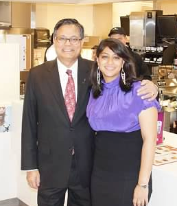

Shahab & Yasmin Hyder
CEOs
CEOs
Shahab and his daughter Yasmin are the current CEOs of Hyder Investments and YSH LLC. With Shahab finding his beginnings at a donut shop, he was no stranger to the food industry when he obtained his first McDonald's location. Yasmin, being surronded by all things McDonald's since here early days, took many different positions at the stores. Now, with years of experience, she has been an acting CEO since 2013.